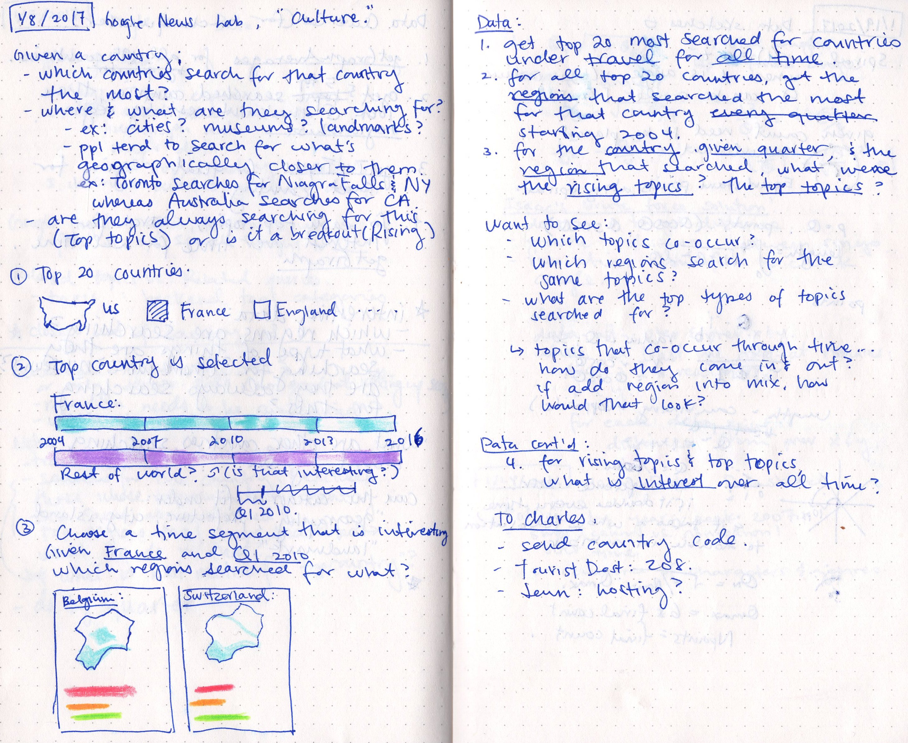
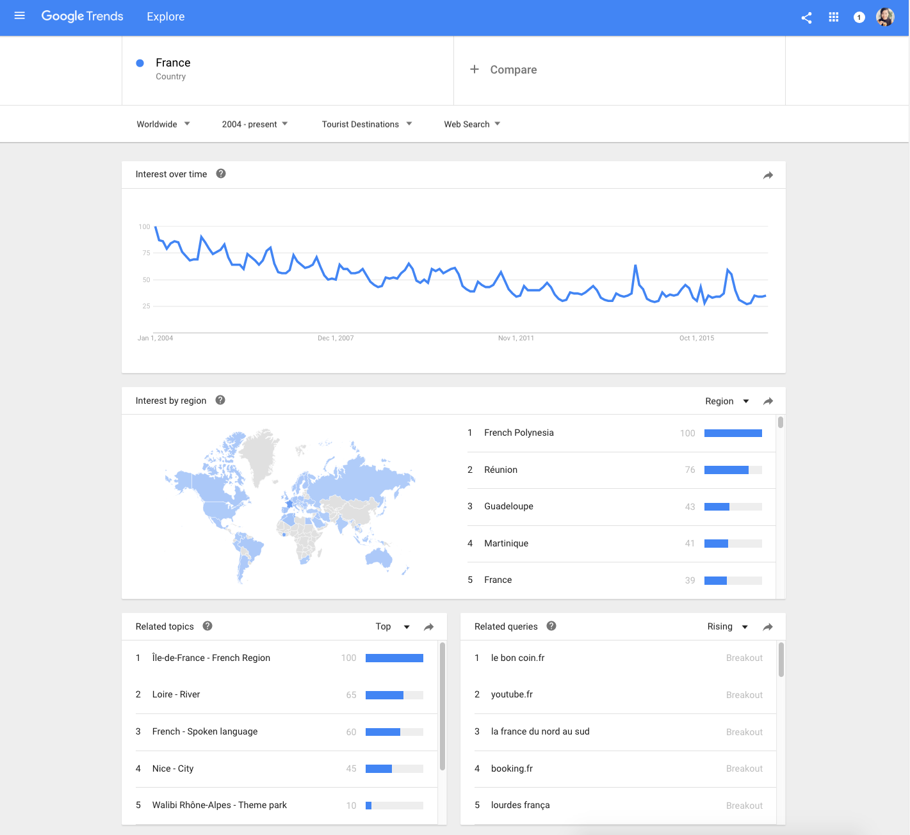

When Nadieh and I got the email from Alberto and Simon to work with Google News Lab, I was ecstatic and beyond intimidated. Afterall, it was Google, it was Simon Rogers and Alberto Cairo, and they had search data back to 2004. They had already published projects from Accurat and Truth & Beauty, and I wasn't sure if I could live up to them.
But I was determined to try my best.
Nadieh and I explored Google Trends and came up with several proposals, and Simon ended up choosing our Culture proposal. Nadieh was to look into language, the most common words a country searched for to translate into English. I wanted to look into travel, at what places a country searched for in another.
Since Simon preferred having the data we displayed live instead of being a snapshot in time, I subcontracted my friend Charles to build a web app with a database to serve up the data we queried from Google Trends. (Let me repeat, I subcontracted someone. For the first time. I feel so adult.) Since I usually work by myself on my data sketches, it was a great feeling to have another person work on this project with me; not only did he get and clean all the data so I didn't have to, he was great to bounce ideas off of since he was so intimately familiar with the data.
 When I started, I wanted to know given a country, which countries were searching for that country the most. I wanted to know, were they looking for cities in that country? Museums? Specific landmarks? And as I started digging into the data with Google Trend's Explore function, I also started to wonder if countries looked for places geographically closer to them; this thought came to mind when I saw that Australia when looking at the U.S. searched primarily for places on the West Coast.
The way Google Trends works, we can put in a set of search terms (up to five) and get back their search interest, all the originating regions, as well as related and top topics over a specific time period. We can also specify a specific originating region, and a category to filter by.  To get the data we needed, Jennifer Lee at the News Lab suggested we search for every country (with Google's list of country id's) filtered by Tourist Destinations and for all time. Since Google Trends returns the search interest back to us as a relative value out of 100, she also suggested that we go through all the countries but leave one of the countries in as a baseline. That way, we can accurately get the top 20 countries by travel search interest.
After getting the top 20 countries, we got the top regions that searched the most for each of those countries every quarter starting from 2004, and then the top topics those regions searched for. It sounded reasonable when we first came up with the queries, but when we got back the data, it was overwhelmingly vast. I meandered for weeks trying to make sense of the data, creating visuals to dig through the data, trying to figure out if there was an interesting story buried in there. At one point, we decided to get travel topics for all the countries around the world and not just the top 20, and we ended up with thousands of topics with hundreds of categories.
To make sense of all the topics and categories, Charles pulled the topic details off of Google's Knowledge Graph Search, which includes images, descriptions, and an array of types for the topic.
{kind=link}
{kind=link}